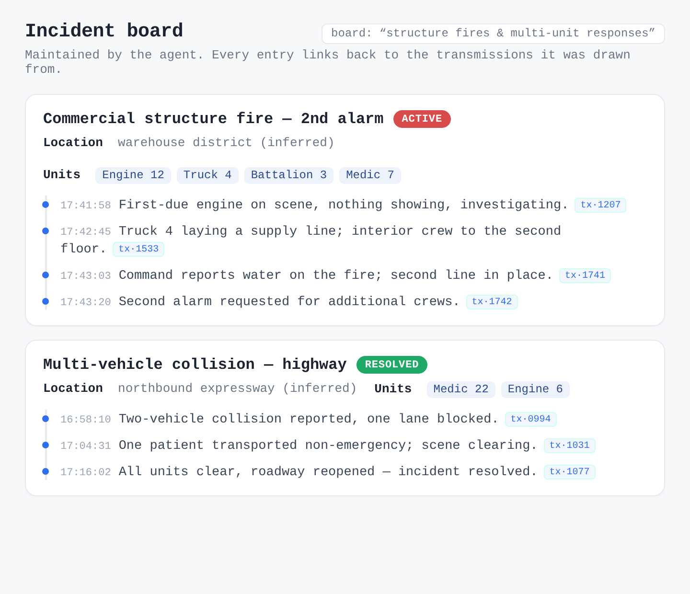
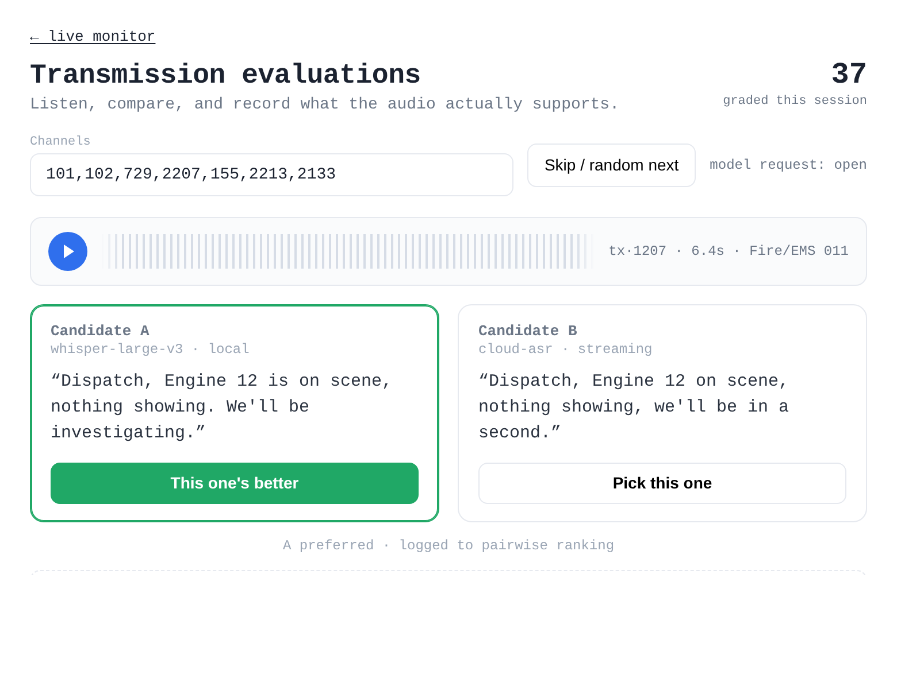

Distributed systems · Applied AI
trunkd
Public-safety radio is public by law, but you'd never know it — it's audio-only, scattered across dozens of talkgroups, and gone the second it's spoken. trunkd makes it accessible: it listens over software-defined radio, transcribes and categorizes everything with AI, and turns the firehose into a live incident board you can actually watch.
The problem, and what it does
Public-safety communications are public, but practically inaccessible to the people who'd benefit from them — partner agencies, journalists, and officials trying to keep up. It's trunked radio (P25, the US digital standard): audio-only, spread across dozens of talkgroups, and gone the moment it's spoken. A scanner lets you listen; it won't let you ask a question, scroll back an hour, or notice that a routine call just became a multi-unit incident.
Monitor those communications over software-defined radio, use AI models to transcribe and categorize every transmission, then synthesize a live incident board on top — with keyword-based and geofenced alerts so the things you care about find you, instead of the other way around.
The rest of this is how I actually built that — and why I made the calls I did.
How it's built
The whole thing is event-sourced. A single immutable log — the stream of transmission metadata on NATS JetStream — is the source of truth. Everything else is a disposable projection I can delete and rebuild by replaying the log. The services are small, single-purpose Go binaries that each subscribe to exactly what they need.
How data moves:
- ingest adapts P25 audio from
trunk-recorder, detects transmission boundaries, and publishes raw PCM plus lifecycle metadata to NATS. Dual ingest pods run active-active and de-duplicate deterministically, so capture never blocks on a slow consumer. - transcode / transcribe convert PCM to Opus and produce streaming transcripts (local Whisper or a cloud model), writing transcript events back to the log. The whole live path is tuned to stay under a second — words appear in the browser in under one second from the moment they leave the radio.
- archiver muxes finished transmissions into Ogg/Opus and writes them to object storage for indefinite retention.
- index projects the metadata stream into SQLite with full-text search — the read API behind the UI. It's intentionally throwaway: delete it and replay the log to rebuild.
- The Svelte SPA streams live audio over a WebSocket and queries the index for history; the browser owns all playlist state, so the server stays stateless.
The event log is the source of truth. Everything else — search index, audio archive, incident board, the UI — is a disposable projection you can delete and replay.
Scale
trunkd runs continuously, capturing every transmission across dozens of talkgroups at once. Transmissions are short and bursty — a second or two to twenty seconds each — so the system is built for a steady stream of small events rather than big batches:
- Continuous, never-blocking capture. Dual active-active ingest pods keep recording even when a downstream consumer stalls; the live path is never allowed to wait on transcription, indexing, or the UI.
- Sub-second live path. From RF capture to a transcript rendered in the browser is under one second, measured end-to-end (not estimated).
- Indefinite audio archive. Every finished transmission is muxed to Ogg/Opus and written to object storage for keeps, so history is fully replayable — the search index and incident board can be thrown away and rebuilt from it at any time.
- Small, versioned contracts. ~24 services exchange 88 versioned Protobuf message types over NATS, so the throughput lives in a handful of well-defined streams rather than ad-hoc endpoints.
The choices I made, and why
Since I'm the only one running this, I kept to a rule: boring, measurable, one-person-operable. The hard guarantees live in a few load-bearing decisions, and everything else stays simple.
- NATS JetStream as the spine. The live path can never wait on a slow downstream consumer, and I needed dual-ingest to be idempotent without coordinating. JetStream's per-message dedup and durable, replayable streams give me both.
- Go for every service. Small binaries I can hold in my head and rewrite from a spec, with CGo where it earns its keep (libopus). Fast to iterate, trivial to deploy.
- SQLite instead of a database server. The search index is a projection, not a system of record — it doesn't need durability or HA, it needs to be simple and rebuildable. FTS5 handles the query load, and there's no database for me to babysit.
- A transmission-centric model. A "transmission" (one unit keying up once) is the only unit that's reliable across radio technologies. Refusing to guess at "calls" removed a whole class of stale, cross-matched state I'd otherwise have to reconcile.
- The browser speaks one protocol. The SPA never learns the storage topology — it subscribes, reads audio, and rebuilds its views client-side. That keeps the server dumb and every view resumable straight from the URL.
- Contracts versioned from day one. 88 Protobuf messages on versioned subjects; schema changes are additive, and a breaking change gets a parallel version rather than a migration scramble.
Letting an LLM run the incident board
The part I'm proudest of is the incident board, and I was deliberate about not just throwing prompts at a model. Two long-running services — incidentd and summarizer — share an agent loop with typed tools and a read-only research surface exposed over MCP (Model Context Protocol).
- I configure each board in plain English — "multi-alarm fires," "any mass-casualty response." The agent gets the board's criteria, the incidents that are already open, and the recent transcripts that might match.
- Instead of free text, the model proposes changes through a typed
submit_incident_patchestool.incidentdvalidates and applies them — open an incident, move it active → inactive → resolved, append a timeline entry, infer a location. The service is the only writer, so the model can reason all it likes but can never corrupt the state. - An MCP research surface (
resolve_catalog,search_transcripts,ask_transmission_audio) lets the agent look up channel and unit names, search back through history, and cite the specific transmissions it based a decision on. - summarizer writes the periodic shift-report and
incident summaries on the same machinery.
ircnotifyrelays changes to IRC, and the web UI shows the board live.
The result is a board that opens, annotates, and closes its own incidents — and every entry traces back to the transmissions that justified it, so I can always check its work.
Making it measure itself
I didn't want to guess whether it was any good, so trunkd measures itself and feeds the results back in:
- A transcript eval workbench. A built-in A/B tool lets me listen to two models on the same audio, vote, and type a correction. Those votes compile into pairwise rankings that decide which model I actually run.
- Adaptive audio gain. My perceptual ratings (too quiet / comfortable / too loud / noise-limited) plus RMS-dB measurements feed a normalizer, so the automatic gain learns from real judgments instead of a fixed curve.
- Honest cost and latency numbers. LLM token usage is metered from the real API responses, never estimated. Latency SLIs measure ingest-to-first-frame and capture-to-audible, sampled only when a browser is sitting idle at the live head so the measurement doesn't lie.
- Observability from day one. Every service exposes Prometheus metrics, and the dashboards are a first-class part of the deploy, not an afterthought.
What was hard
A few problems took real work to get right:
- Staying under a second without dropping audio. The live path has to transcribe while never blocking capture. Backpressure anywhere — a slow model, a busy index — can't be allowed to stall the radio, so ingest publishes and moves on, and everything downstream catches up on its own.
- Idempotent capture with no coordinator. Two ingest pods record the same radio in parallel for resilience. They de-duplicate deterministically, without a lock or a leader, so one can die mid-transmission and nothing is lost or doubled.
- Letting a model reason without letting it break things. An LLM deciding what belongs on an incident board is useful right up until it hallucinates state. Constraining it to typed patches applied by a single authoritative writer — with an evidence trail back to real transmissions — was what made the AI layer trustworthy instead of a liability.
- Transcribing bad audio. Radio is clipped, noisy, and wildly inconsistent in level. Getting usable transcripts meant adaptive gain driven by real perceptual ratings and an A/B eval harness to keep the model honest, rather than trusting any one ASR out of the box.
What it looks like
- 17:43:41Fire/EMS · Engine 12On scene, nothing showing, investigating.
- 17:43:47FEMS · Truck 4Lay us a supply line off the corner hydrant.
- 17:43:52Fire/EMS · Battalion 3Command, we have water on the fire, second line in place.
- 17:43:58FEMS · Medic 7Transporting one, non-emergency, to the regional center.
- 17:44:03Fire/EMS · Battalion 3Requesting a second alarm for additional crews


Transcripts and incidents shown here are fabricated. The real feed carries live public-safety audio, so these are stand-ins that mirror the actual interface without exposing anyone's information.
Where it stands
trunkd runs in production today — capturing, transcribing, and quietly maintaining its incident board around the clock. I designed, built, and operate all of it myself: the protocol work, the streaming media, the agent loop, the Svelte frontend, the Kubernetes deployment, and the dashboards that tell me when something's off.
It started as a way to answer a small question — what's going on out there right now? — and turned into the project where I got to work through event sourcing, LLM agents with real guardrails, and full-stack ownership end to end. It's still the one I keep coming back to.